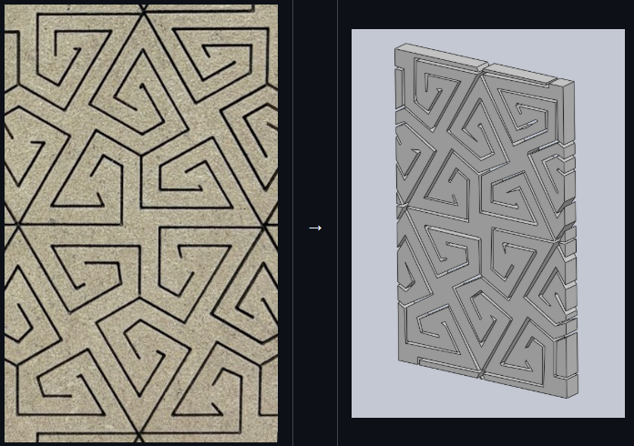

I am currently working with Dr. Pal on dispersion analysis research where
we analyze wave propagation in lattices with COMSOL Multiphysics modeling. The first roadblock
I had to address was by creating a program that uses an LLM to analyze lattices from pictures and make extruded parts
of these in SolidWorks (see above).
So far, this program accounts for lines, arcs, and circle commands using SolidWorks
API calls. Next steps will include importing SolidWorks models into COMSOL Multypyshics to study how they behave
in simulations. We are currently running experiments looking at the stiffnesses for different lattices with
dynamic excitations set with a prescribed displacement and frequency at a central point.